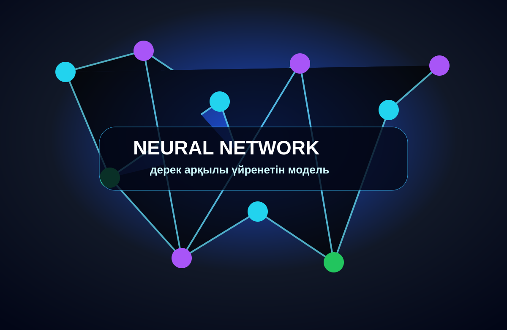

AI Chat Interface
Сұрақ пен жауапқа арналған заманауи интерфейс.
Бұл бетте суреттер, аудио, видео және AI қолдану мысалдары орналасқан.
Суреттер сайттың тақырыбына сай жасалған және тапсырмадағы кемінде үш сурет талабын орындайды.
Сұрақ пен жауапқа арналған заманауи интерфейс.
Пайдаланушыға көмектесетін цифрлық көмекші идеясы.

Деректер арқылы үйренетін модель көрінісі.
Сайт ішінде бір аудиофайл және бір бейнефайл бар.
Қысқа технологиялық дыбыстық файл.
Жасанды интеллект желісі туралы қысқа motion видео.
Жасанды интеллект дұрыс қолданылса, оқу мен жұмысты жеңілдетеді.
Күрделі тақырыпты қарапайым тілмен түсіндіруге, жоспар құруға және мысал беруге көмектеседі.
Хат, есеп, сипаттама, идея және қысқаша қорытынды дайындауға қолданылады.
Сценарий, презентация құрылымы, дизайн идеясы және мәтін нұсқаларын ұсына алады.
AI жауабын тексеру, жеке деректерді қорғу және этиканы сақтау қажет.